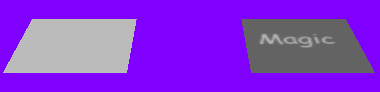

GlossMaps.h
Illustrates gloss maps which modulates the specular lighting contribution by the alpha channel to achieve a uniformly specular surface. The two images show the squares oriented at different angles.
|  |
|
Gloss Maps: GlossMaps.h Illustrates gloss maps which modulates the specular lighting contribution by the alpha channel to achieve a uniformly specular surface. The two images show the squares oriented at different angles.
|